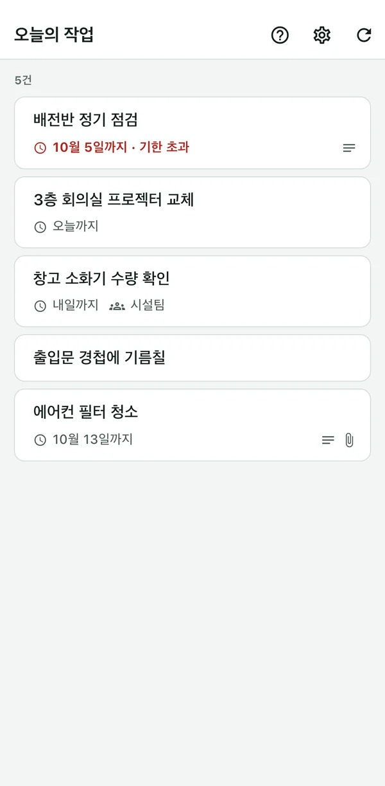
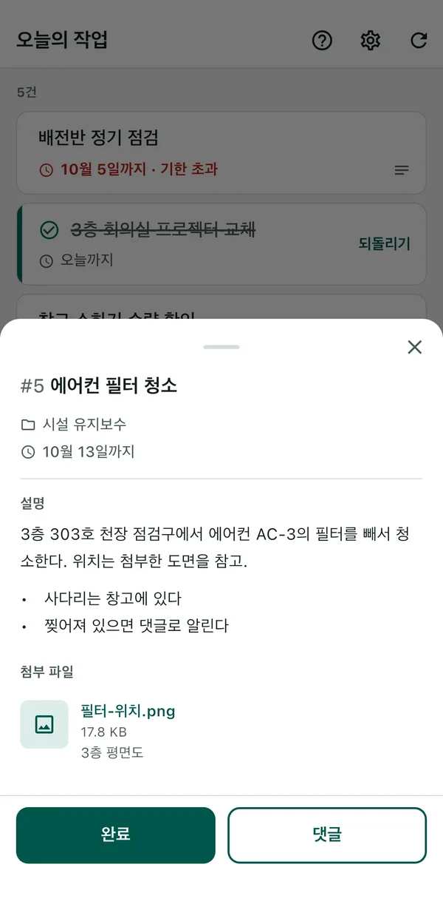

BeatMine for Redmine
지원
내게 배정된 Redmine 작업을 iPhone에서 간단한 조작으로 보고하는 앱입니다. BeatMine은 Redmine 공식 앱이 아니며, Redmine 개발자와 관련이 없습니다.
- 나 또는 내가 속한 그룹이 담당하는, 아직 끝나지 않은 작업만 표시됩니다. 그룹 담당 작업에는 그룹 이름이 표시됩니다. 기한이 지난 작업은 빨간색으로 표시됩니다.
- 작업을 오른쪽으로 밀면 완료됩니다. 바로 되돌릴 수 있습니다.
- 작업을 탭하면 작업의 설명과 첨부 파일을 읽을 수 있습니다. 이미지는 앱에서 열어 확대할 수 있습니다. 설명이나 첨부가 있는 작업에는 줄에 표시가 나옵니다.
- 작업을 탭하면 댓글도 보낼 수 있습니다. 내용은 Redmine 이력에 남습니다.


필요한 것
- Redmine 6.0·6.1·7.0 중 하나.
- 이 기기에서 해당 Redmine을 HTTPS로 열 수 있을 것.
- Redmine에서 REST API가 활성화되어 있을 것(Redmine 관리자의 설정).
- 내 API 키. 없으면 연결 화면의 ‘Redmine에서 API 키 받기’에서 받을 수 있습니다.
사용할 수 없는 환경은 ‘지원하지 않는 것’에 정리되어 있습니다.
시작하기
- 앱을 열고 Redmine URL을 입력합니다.
- ‘Redmine에서 API 키 받기’를 누릅니다. 브라우저에서 Redmine이 열리면 로그인하고, 표시된 API 키를 복사합니다. BeatMine으로 돌아와 ‘붙여넣고 연결’을 누릅니다. API 키가 있다면 입력란에 넣고 ‘연결’을 눌러도 됩니다.
- 내 작업 목록이 표시됩니다.
문제가 생겼을 때
화면에 표시된 문구를 찾아 주세요.
연결할 때
‘Redmine에 연결할 수 없습니다.’라고 표시되면 원인을 확인합니다. URL과 API 키의 오류는 해당 입력란 아래에 표시됩니다. 그 밖의 원인은 ‘자세히’를 누르면 표시됩니다.
| 원인 문구 | 할 수 있는 일 |
|---|---|
| ‘Redmine URL이 올바르지 않습니다.’ | 기기의 브라우저에서 그 URL을 열어 보세요. 열리지 않으면 URL을 잘못 입력했거나, 사내에서만 쓰는 Redmine에 외부에서 연결하고 있을 수 있습니다. |
| ‘API 키가 올바르지 않습니다.’ | API 키를 다시 입력하세요. ‘Redmine에서 API 키 받기’에서 표시된 API 키를 복사해 붙여넣습니다. Redmine 앞에 다른 로그인(Basic 인증 등)이 있는 환경에서는 이 앱을 사용할 수 없습니다. |
| ‘Redmine API가 비활성화되어 있습니다. Redmine 관리자에게 활성화를 요청하세요.’ | Redmine에서 REST API를 활성화해 달라고 요청하세요. |
| ‘Redmine 인증서를 확인할 수 없습니다.’ | 이 기기에서 해당 Redmine의 인증서를 확인할 수 없습니다. 사설 인증서(조직 내부에서만 발급한 인증서)를 사용하는 Redmine은 지원하지 않습니다. Wi-Fi 로그인 절차가 끝나지 않았거나 기기의 날짜와 시간이 맞지 않을 때도 표시됩니다. |
불러오기·완료·댓글을 할 때
| 화면에 표시되는 문구 | 할 수 있는 일 |
|---|---|
| ‘네트워크 오류’ | 신호가 잡히는 곳에서 다시 시도하세요. Redmine이 일시적으로 응답하지 않을 때도 표시됩니다. |
| ‘다른 사용자가 업데이트했습니다. 새로고침하세요.’ | 다른 사람이 그 작업을 변경했습니다. 새로고침하고 현재 상태를 확인한 뒤 조작하세요. |
| ‘완료할 권한이 없습니다.’(댓글·불러오기에서도 비슷한 문구가 표시됩니다) | 해당 Redmine에서 허용되지 않은 조작입니다. Redmine 관리자에게 문의하세요. |
| ‘완료되지 않은 하위 작업이 있습니다.’ | 하위 작업을 먼저 모두 완료하세요. |
| ‘완료되지 않은 작업에 의해 차단되었습니다.’ | 차단하고 있는 작업(Redmine의 ‘연결된 일감’)을 먼저 완료하세요. |
| ‘변경할 수 없었습니다.’ | Redmine이 변경을 받아들이지 않았습니다. 완료할 때 입력해야 하는 항목이 있으면 발생합니다. 그때는 Redmine 화면에서 완료하세요. |
| ‘전송 완료를 확인할 수 없습니다. 새로고침하세요.’ | 보낸 내용이 Redmine에 반영되었는지 확인하지 못한 상태입니다. 새로고침하면 다시 확인합니다.
|
| ‘앱 오류입니다. 새로고침하세요.’ | 새로고침해도 해결되지 않으면 지원하지 않는 Redmine(6.0 이전 등)일 수 있습니다. |
설명·첨부 파일을 볼 때
| 화면에 표시되는 문구 | 할 수 있는 일 |
|---|---|
| ‘앱에서 열 수 없습니다’ | 앱에서 열 수 있는 것은 20MB까지의 이미지(JPEG·PNG·GIF·WebP·HEIC)뿐입니다. PDF 등 다른 파일은 Redmine 화면에서 여세요. |
| ‘링크를 열 수 없습니다.’ | 설명 속 링크를 기기의 브라우저에서 열지 못했습니다. 설명의 글은 길게 눌러 선택하고 복사할 수 있으니, 브라우저에 붙여 넣어 여세요. |
이미지를 열 때의 ‘네트워크 오류’ 등은 위의 ‘불러오기·완료·댓글을 할 때’와 같습니다. ‘다시 시도’로 다시 불러올 수 있습니다.
그 밖의 자주 묻는 질문
- 완료했더니 의도하지 않은 상태(‘거절’ 등)가 되었다
- 그 작업에서 변경할 수 있는 종료 상태 중, Redmine의 상태 순서에서 첫 번째 것을 사용합니다. 어떤 상태로 했는지는 완료 알림에 표시됩니다. 완료한 줄의 ‘되돌리기’(또는 완료 알림의 ‘취소’)로 되돌릴 수 있습니다. 다만 목록을 새로고침한 뒤나, Redmine에서 원래 상태로 되돌리는 변경이 허용되지 않을 때는 되돌릴 수 없습니다. 그때는 Redmine 화면에서 되돌리세요. Redmine 관리자가 상태 순서를 바꾸면(‘완료’를 ‘거절’보다 위로) 선택되는 상태가 바뀝니다.
- API 키를 받을 때 비밀번호 입력을 요구받았다(Redmine 7.0)
- 로그인 후 시간이 지나면 Redmine이 비밀번호 재입력을 요청합니다. 입력하면 API 키가 표시됩니다.
- 목록에 나오지 않는 작업이 있다
- 나 또는 내가 속한 그룹에 할당되어 있고, 아직 완료되지 않았으며, 시작일이 미래가 아닌 작업만 표시합니다. 종료된 프로젝트의 작업도 표시하지 않습니다. 기한으로는 거르지 않습니다.
- 그룹의 작업은 누가 하나요
- 앱에서는 정하지 않습니다. 그룹 안에서 이야기하거나, Redmine에서 담당자를 개인으로 바꾸세요. 그룹의 작업을 완료하면 같은 그룹의 다른 사람 목록에서도 사라집니다.
- 설명에 ‘h2.’, ‘*’ 같은 기호가 나온다
- 앱은 설명을 Markdown으로 보고, 제목·목록·굵은 글씨·링크·코드만 정리합니다. Textile로 쓰는 조직의 Redmine이나 표·삽입된 이미지는 기호 그대로 나옵니다.
- 기기를 다른 사람에게 넘기거나 처분할 때
- ‘설정’의 ‘연결 삭제’로 API 키·댓글 임시 저장본·확인되지 않은 전송 기록이 기기에서 삭제됩니다.
지원하지 않는 것
다음 환경은 동작할 수도 있지만 확인하지 않았습니다.
- Redmine 6.0 이전
- 플러그인을 설치한 Redmine
- 클라우드형(My Redmine·Planio 등)
- 사설 인증서(조직 내부에서만 발급한 인증서)
- Redmine 앞에 둔 인증(Basic 인증 등)
- SSO
문의
버그 신고와 의견은 이메일로 보내 주세요.
GitHub 계정이 있다면 GitHub Issue로도 보낼 수 있습니다. Issue는 누구나 볼 수 있습니다.
API 키·비밀번호·Redmine URL·작업 내용 등 다른 사람이 알면 안 되는 정보는 쓰지 마세요. 다음 정보를 함께 보내 주시면 더 빨리 답변할 수 있습니다.
- 앱 버전(iPhone의 설정 > 일반 > iPhone 저장 공간 > BeatMine에서 확인할 수 있습니다. 모르면 생략해도 됩니다)
- iPhone 기종과 iOS 버전
- Redmine 버전(알고 있다면)
- 화면에 표시된 문구(‘네트워크 오류’ 등)와 그때 한 조작
2026년 10월 3일 업데이트